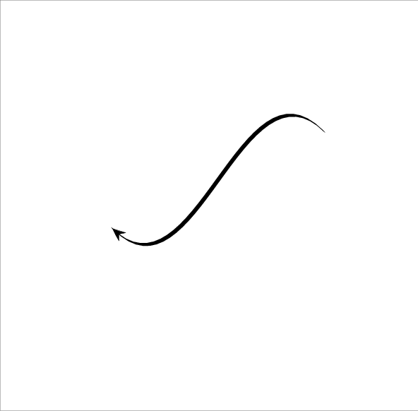

http://orcid.org/0000-0002-3224-8858
http://orcid.org/0000-0002-3224-8858
by Paul Murrell
http://orcid.org/0000-0002-3224-8858
Version 1: Wednesday 19 September 2018

This document
by Paul
Murrell is licensed under a Creative
Commons Attribution 4.0 International License.
This report discusses some problems that can arise when attempting to import PostScript images into R, when the PostScript image contains coordinate transformations that skew the image. There is a description of some new features in the 'grImport' package for R that allow these sorts of images to be imported into R successfully.
One difference between general-purpose graphics languages like PostScript (Adobe Systems Inc., 1999) or SVG (Ferraiolo and ed., 2001) and a statistical graphics system like the one in R (R Core Team, 2018) is how they work with coordinate transformations.
In a general-purpose graphics language, there is usually a
"current transformation matrix" that transforms all
graphical output. For example, the following PostScript code,
stored in a file called simple.ps,
describes a simple thick line and a text label.
%! newpath 50 50 moveto 100 100 lineto 10 setlinewidth stroke /Times-Roman findfont 12 scalefont setfont 75 50 moveto (Hello) show showpage
If we add a coordinate transformation at the start of that PostScript
code, which inverts the y-axis and skews the image by scaling the x-axis
by a factor of two, the transformation affects all of the output.
In particular, both the text and the line have been horizontally
stretched and the text is now upside down.
The code below is stored in a file called transform.ps.
%! 0 150 translate 2 -1 scale newpath 50 50 moveto 100 100 lineto 10 setlinewidth stroke /Times-Roman findfont 12 scalefont setfont 75 50 moveto (Hello) show showpage
This sort of coordinate transformation is often required in statistical graphics to represent the scales on a plot. In the plot below, the y-axis is inverted and the scaling factor on the x-axis is different than the scaling factor on the y-axis (both because of unequal scales and because of unequal physical dimensions). However, in a plot, we do not want text to be written upside down just because the y-axis scale is inverted, nor do we want text to be distorted if the scales on the plot axes do not match. Similarly, when we draw a line through data, we do not want the width of the line to be distorted by differences between the scales on the plot axes.
plot(c(1, 20), c(1, 10), type="l", lwd=20, ylim=c(10, 1), lend="butt") text(15, 2, "Hello", cex=4, family="Times")

This means that, in R graphics, although features like the location of data symbols and the location of text labels on a plot must obey the coordinate system of the scales on the axes, features like the size of text and the thickness of lines completely ignore the plot coordinate system.
This difference in the treatment of coordinate systems creates
a problem when it comes to importing general-purpose
graphical images, such as
PostScript images, into R.
The following code uses version 0.9-1 of the 'grImport' package
(made available as the package 'grImportOLD' for this report)
to import the transform.ps PostScript image into
R. In the resulting image, the line is not
distorted in R like it was in the original PostScript image,
This reflects the fact that R graphics ignores
coordinate transformations when calculating the width (or shape)
of the line. (The fact that the text is actually drawn
correctly is something that we will come back to later.)
library(grImportOLD) grImportOLD::PostScriptTrace("transform.ps", "transform-0.9-1.xml") badTransform <- grImportOLD::readPicture("transform-0.9-1.xml") grImportOLD::grid.picture(badTransform)
This report describes an update of the 'grImport' package
that solves this problem, so that PostScript images that contain
coordinate transformations like the one in
transform.ps
can be rendered faithfully in R.
The changes to 'grImport' in version 0.9-2 are based on
the strokepath operator in PostScript.
This operator takes a path (a collection of lines and curves) and,
instead of stroking it
(drawing a line along the path), calculates a new path that
describes the outline of the area that would have been drawn
by stroking the original path.
The following PostScript code illustrates this idea.
This code begins by describing exactly the same path
as in transform.ps (a thick straight line between
two points, distorted by a scaling transformation).
However, just after the
10 setlinewidth operation, this code calls
strokepath and then 1 setlinewidth.
This means that the subsequent stroke,
instead of drawing a thick straight line between two points,
draws the outline of that thick straight line.
%! 0 150 translate 2 -1 scale newpath 50 50 moveto 100 100 lineto 10 setlinewidth strokepath 1 setlinewidth stroke showpage

To reproduce the original distorted straight line in R, instead of importing the original thick straight line between two points, we can import the outline of that thick straight line and fill in the outline. In other words, we turn the original stroke operation of a straight line into a fill operation of the outline of the straight line. This works because, although R graphics cannot draw a skewed thick line, it is capable of filling in an outline.
The above shows how it is possible, by inserting a
strokepath operation,
to convert an original PostScript image containing a stroke that R
cannot draw
into a PostScript image containing a fill that R can draw.
However,
there remains the problem of how to add that strokepath
conversion to an image that we want to import into R.
The answer to that problem goes to the heart of how the 'grImport'
package works. The first step in importing a PostScript image
into R is a call to the PostScriptTrace function,
which converts a PostScript file into an XML file containing
graphics operations that R can draw. The
PostScriptTrace function works by running its own
PostScript code to process the PostScript file that we want to
import. The small R function below, pscode,
gives some idea of how that works.
This function just generates some PostScript code, given the name of a PostScript file.
pscode <- function(psimage) { c("/stroke {", " strokepath", " fill", "} def", paste0("(", psimage, ") run")) }
For example, if we are interested in the simple.ps
PostScript image, we generate the following PostScript code.
cat(pscode("simple.ps"), sep="\n")
/stroke {
strokepath
fill
} def
(simple.ps) run
The last line of the PostScript code,
(simple.ps) run, will execute the PostScript code
in the file simple.ps. In other words, the PostScript
code we have generated is designed to run the PostScript code
in the original image. The code before that defines a PostScript operation
called stroke. When the stroke operation
is encountered, this definition will be run, which will call the
strokepath operator and then the fill operator.
The definition of the stroke operator is significant
because that overrides the pre-existing stroke
operator. This means that, when we run the PostScript code
in simple.ps, when we hit a stroke operation,
instead of stroking a path, we will run
strokepath and fill instead.
This is how we can inject a
strokepath operation into an existing PostScript
image; by hijacking the standard PostScript stroke operator
and replacing
it with our own definition.
In reality, we do not want to replace a stroke with
a fill all the time. We only want to do this when the line has
been skewed by unequal scaling factors.
The R function below, scalecode,
demonstrates how we can do this sort of
check, using the same idea as above. We redefine the
stroke operator to look at the current PostScript
transformation matrix (using the currentmatrix
operator) and calculate the amount of x-scaling and y-scaling
in force when the stroke operator is called.
scalecode <- function(psimage) { c("/str 50 string def", "/showscale {", " matrix currentmatrix aload pop pop pop", " dup mul exch dup mul add sqrt 3 1 roll", " dup mul exch dup mul add sqrt", " (xscale=) print dup str cvs print", " (, yscale=) print exch dup str cvs print", "} def", "/stroke {", " showscale", "} def", paste0("(", psimage, ") run")) }
The function below, showscale,
shows how we can run ghostscript (Mertz, 1997) from R
to run the PostScript code that the scalecode function
generates.
showscale <- function(psimage) { ps <- scalecode(psimage) psfile <- tempfile() writeLines(ps, psfile) cat(system(paste0("gs -dNOPAUSE -dBATCH -q ", "-sDEVICE=ps2write -sOutputFile=tmp.ps ", psfile), intern=TRUE), "\n") }
The result of this function for the simple.ps
PostScript image (without
scaling) is shown below.
showscale("simple.ps")
xscale=10.0, yscale=10.0
The result for the PostScript image transform.ps
shows that the x-scaling and y-scaling are unequal. In the
'grImport' function PostScriptTrace, this
case is detected and a strokepath plus fill
is used instead of the original stroke.
showscale("transform.ps")
xscale=20.0, yscale=10.0
The code below shows that the new version of 'grImport'
correctly renders the PostScript image transform.ps in R
(because it fills the outline of the line, rather than stroking the line).
library(grImport) PostScriptTrace("transform.ps", "transform-0.9-2.xml") goodTransform <- readPicture("transform-0.9-2.xml") grid.picture(goodTransform)
The simple PostScript examples used so far have been extremely basic, just to make the coordinate transformations clear. In practice, we are unlikely to be importing a PostScript image that we have generated by hand. The reason for wanting to import an external image into R is because we have used a different graphics system to generate the image. And the reason for using a different graphics system is because other graphics systems are much better than R at generating certain sorts of images. For example, PGF/TikZ (Tantau, 2013) is better than R for drawing diagrams.
This section briefly shows an example of a simple shape generated using MetaPost (Hobby, 1998). The point of this example is to show a graphics system where it is straightforward to describe a line with a skewed transformation.
The MetaPost code below describes a loop shape, by describing a set of points and asking MetaPost to draw a curve through the points.
prologues := 3;
outputtemplate := "%j.ps";
beginfig(1);
z0 = (0.5cm,1.5cm);
z1 = (2.5cm,2.5cm);
z2 = (6.5cm,0.5cm);
z3 = (3.0cm,1.5cm);
pickup pencircle xscaled 2mm yscaled 4mm rotated 30;
draw z0..z1..z2..z3..z0..cycle;
endfig;
end
The most
important line of code is the line starting pickup pencircle.
This line describes the "pen" that is used to draw the curve and
it says that the pen is taller than it is wide and that the pen
is rotated anticlockwise. The shape of this pen is shown below
(at five times its proper size).
This ability to draw lines with a skewed pen makes it very easy to draw skewed lines in a MetaPost image.
If we try to import this image with version 0.9-1 of 'grImport', we get a poor result because R is stroking the line with a fixed width (because that is the best that R can do).
grImportOLD::PostScriptTrace("loop.ps", "loop-0.9-1.xml") badLetterC <- grImportOLD::readPicture("loop-0.9-1.xml") grImportOLD::grid.picture(badLetterC)
However, with the new version of 'grImport', we can import the MetaPost image correctly (because we detect that the line has been skewed and fill the outline of the stroke rather than trying to stroke it).
PostScriptTrace("loop.ps", "loop-0.9-2.xml") goodLetterC <- readPicture("loop-0.9-2.xml") grid.picture(goodLetterC)
The test within the PostScriptTrace function that
determines whether the x-scaling and y-scaling within a
PostScript file are the same is an example of a test for equality
between two floating point values. And testing
for equality between floating point values is a mistake that people should
make at most once in their life.
0.1 == 0.3 - 0.2
[1] FALSE
As a consequence, the actual test that PostScriptTrace
performs is whether the absolute difference between the
x-scaling and the y-scaling is very small.
The amount "very small" defaults to 0.1, but PostScriptTrace
provides a scaleEPS argument so that the user can
control what "very small" means.
This turns out to be useful in a slightly different problem that arises when importing PostScript images into R: dashed lines.
In PostScript, the setdash operator is used to set
the dash pattern for stroking a path. The code below shows an example,
where the dash pattern is 3 units on then 3 units off, with an
offset of 1.5 (so we start half-way through the first "on").
%! newpath 50 50 moveto 100 100 lineto 10 setlinewidth [3] 1.5 setdash stroke showpage
The line width in this example is set to 10, so the dashes are shorter
than the line is wide and, unfortunately, this is something that
R graphics cannot emulate.
In R graphics, the lty graphics parameter can be specified
as an even number of (up to eight) on-off values, but the smallest
value is 1, which corresponds to the width of the line.
Furthermore, R graphics has no concept of
a "dash offset".
This means that 'grImport' does a poor job of importing the PostScript dashed line from above.
PostScriptTrace("dash.ps", "dash-bad.xml") badDash <- readPicture("dash-bad.xml") grid.picture(badDash)
However, because we can select our own value of scaleEPS,
and whenever the absolute difference between x-scaling and
y-scaling is greater than scaleEPS we convert a
PostScript stroke to a fill,
if we set scaleEPS to be negative, every
stroke will be converted to a fill,
and 'grImport' will reproduce the dashed line perfectly
(as shown below).
library(grImport) PostScriptTrace("dash.ps", "dash-good.xml", scaleEPS=-1) goodDash <- readPicture("dash-good.xml") grid.picture(goodDash)
All previous examples in this report have only demonstrated that it is possible to replicate an external PostScript image within R. This section describes a slightly more realistic scenario that incoporates an imported PostScript image within an R plot.
The following code produces a 'lattice' (Sarkar, 2008) plot with a small customisation: there is a text label and a line (with an arrow) from the label to a point in the plot.
library(lattice) library(grid) rx4 <- mtcars[1, ] xyplot(mpg ~ disp, mtcars, pch=16, panel=function(...) { grid.text(rownames(rx4), 400, 27, just="left", default.units="native") grid.segments(400, 27, rx4$disp, rx4$mpg, default.units="native", arrow=arrow()) panel.xyplot(...) })

The MetaPost system, with its 'mparrows' module, has a much wider range of line styles and arrowheads than R (even taking into account packages like 'shape' (Soetaert, 2018) and 'DiagrammeR' (Iannone, 2018)). Rather than attempt to rewrite facilities similar to MetaPost's within R, we can just make use of MetaPost to draw a line and then import it into R.
The following code defines a function that generates, imports, and draws a MetaPost line between two points. It first generates MetaPost code to draw a line, based on a start and end point and start and end angles. This code also draws a rectangle of a specified width and height. The MetaPost code is run to produce a PostScript file and the PostScript file is imported into R. Within R, the rectangle is removed (that was just to scale the image correctly) and then the remaining line (plus arrow) is drawn.
mpLine <- function(x1, y1, x2, y2, angle, w, h) { mpcode <- c("prologues := 3;", 'outputtemplate := "%j.ps";', "input mparrows;", "setarrows(barbed);", "barbedarrowindent := .6;", "ahlength := 5mm;", "beginfig(1);", paste0("draw (0,0)-", "-(", w, "cm,0)-", "-(", w, "cm,", h, "cm)-", "-(", "0,", h, "cm)-", "-cycle;"), paste0("z0 = (", x1, "cm,", y1, "cm);"), paste0("z1 = (", x2, "cm,", y2, "cm);"), paste0("drawarrow z0{dir ", angle, "}..z1{dir ", angle, "};"), paste0("pickup pencircle xscaled 5pt yscaled .5pt rotated ", angle, ";"), paste0("draw z0{dir ", angle, "}..z1{dir ", angle, "};"), "endfig;", "end") mpfile <- "line.mp" psfile <- "line.ps" xmlfile <- "line.xml" writeLines(mpcode, mpfile) system(paste0("mpost ", mpfile)) PostScriptTrace(psfile, xmlfile) pic <- readPicture(xmlfile) line <- pic[-1] line@summary@xscale <- pic@summary@xscale line@summary@yscale <- pic@summary@yscale grid.picture(line, exp=0) }
The image below shows an example of the MetaPost image that this function creates (complete with its border rectangle).
The next code makes use of that function to add a MetaPost line to the 'lattice' plot. Some calculations are required to express the line start point and end point, and the overall size of the MetaPost image, in terms of centimetres (all within the 'grid' viewport that corresponds to the 'lattice' plot panel).
xyplot(mpg ~ disp, mtcars, panel=function(...) { panel.xyplot(...) textLeft <- unit(400, "native") textY <- unit(27, "native") grid.text(rownames(rx4), textLeft, textY, just="left") textLeftCM <- convertX(textLeft - unit(1, "mm"), "cm", valueOnly=TRUE) textYCM <- convertY(textY, "cm", valueOnly=TRUE) pointRightCM <- convertX(unit(mtcars$disp[1], "native") + unit(2, "mm"), "cm", valueOnly=TRUE) pointYCM <- convertY(unit(mtcars$mpg[1], "native") - unit(2, "mm"), "cm", valueOnly=TRUE) panelWidthCM <- convertWidth(unit(1, "npc"), "cm", valueOnly=TRUE) panelHeightCM <- convertHeight(unit(1, "npc"), "cm", valueOnly=TRUE) mpLine(textLeftCM, textYCM, pointRightCM, pointYCM, 135, panelWidthCM, panelHeightCM) })

The 'grImport' package successfully imports skewed lines by converting them to filled paths, but this conversion is only performed where necessary. An alternative would be to convert all shapes into paths (similar to what happens in SVG output with Cairo graphics; Packard et al., 2018), but that is not done in 'grImport' because rendering of paths is not as good as rendering of the original shapes in some cases. For example, rendering a very thin line as a path can lead to either a too heavy line or no line at all because on some graphics devices at least, a line will be anti-aliased, but a path will not. The code below draws a series of thin, horizontal filled rectangles (on the left) and a series of line segments (on the right), with the "width" of the result slowly decreasing. The "widths" of the filled rectangles decrease in quantum steps (and the final one disappears), while the line segments decrease more smoothly due to antialiasing.
grid.rect(x=.2, width=.3, y=1:5/6, height=unit(1:5, "pt"), gp=gpar(col=NA, fill="black")) grid.segments(.6, 1:5/6, .9, 1:5/6, gp=gpar(lwd=1:5, lineend="butt"))

Similarly, text that is rendered as filled paths rather than using proper font rendering can produce a worse result because font rendering uses techniques such as "hinting" to produce a good result and filling a path does not use these techniques.
On the other hand, importing text is tricky because it is not necessarily easy or possible to find the font that was used to draw the original image. The reason the upside-down text was imported correctly right back at the beginning of this report is because, by default, 'grImport' converts text in a PostScript image to a filled path.
Being able to import images into R is different from being able to include an image. Importing an image means converting it into the language and data structures of the parent system. By contrast, including an image means keeping the image as a single opaque object (e.g., including a PostScript image within a LaTeX document). Importing an image is useful because it exposes the image to the facilities of the container language. For example, having imported an image into R, we can use R subsetting to extract just some portion of the original image as we did to remove the rectangle border from a MetaPost image in the Section Integrating the imported image with an R plot).
When we are importing an image between higher-level languages, like MetaPost or R, going through a lower-level intermediary, like PostScript, means that we lose some of the information about the original image when we attempt to move between higher-level languages.
This report has described one situation where the higher-level system (R in this case) loses information when importing the lower-level intermediary (PostScript); a skewed stroke in MetaPost, which remains a skewed stroke in PostScript, becomes a filled path in R.
Loss of information can also occur in the transition from higher-level language to lower-level intermediary. For example, in MetaPost it is possible to describe a line that is drawn with a pen that varies along the length of the line (essentially producing a variable-width line). This cannot be converted directly to a line stroke in PostScript, so the PostScript that is generated from MetaPost produces a filled path, rather than a line. The MetaPost code below draws a curve between three points, with a different pen width and angle specified at each point, but this produces PostScript that is a filled path rather than a stroked line (as can be seen in the final line of the PostScript code that is shown below the image).
prologues := 3; outputtemplate := "%j.ps"; beginfig(1); z1 = (0, 0); z2 = (50, 50); z3 = (100, 0); penpos1(5, 0); penpos2(10, 90); penpos3(20, 0); penstroke z1e..z2e..z3e; endfig; end
%!PS-Adobe-3.0 EPSF-3.0
%%BoundingBox: -3 0 111 56
%%HiResBoundingBox: -2.5 0 110.00775 55.29723
%%Creator: MetaPost 1.999
%%CreationDate: 2018.09.19:2112
%%Pages: 1
%%DocumentResources: procset mpost-minimal
%%DocumentSuppliedResources: procset mpost-minimal
%%EndComments
%%BeginProlog
%%BeginResource: procset mpost-minimal
/bd{bind def}bind def/fshow {exch findfont exch scalefont setfont show}bd
/fcp{findfont dup length dict begin{1 index/FID ne{def}{pop pop}ifelse}forall}bd
/fmc{FontMatrix dup length array copy dup dup}bd/fmd{/FontMatrix exch def}bd
/Amul{4 -1 roll exch mul 1000 div}bd/ExtendFont{fmc 0 get Amul 0 exch put fmd}bd
/ScaleFont{dup fmc 0 get Amul 0 exch put dup dup 3 get Amul 3 exch put fmd}bd
/SlantFont{fmc 2 get dup 0 eq{pop 1}if Amul FontMatrix 0 get mul 2 exch put fmd}bd
%%EndResource
%%EndProlog
%%BeginSetup
%%EndSetup
%%Page: 1 1
0 0 0 setrgbcolor
newpath -2.5 0 moveto
-1.61581 27.50935 22.67906 48.33354 50 45 curveto
72.76758 42.22205 89.9105 22.93625 90 0 curveto
110 0 lineto
110.54294 32.6178 82.44759 58.37186 50 55 curveto
22.11862 52.10265 1.30803 28.00616 2.5 0 curveto
closepath fill
showpage
%%EOF
This is also how the 'vwline' package (Murrell, 2017) for drawing variable-width lines in R works; it generates paths to fill rather than lines to stroke.
Where possible, it is therefore better to be able to convert more directly between higher-level languages. This is what, for example, the 'tikzDevice' (Sharpsteen and Bracken, 2018) does by converting R graphics output into PGF/TikZ graphics. Another example, is the conversion that the 'gridGraphics' package (Murrell and Wen, 2018) performs between the 'graphics' system and the 'grid' system (entirely within R).
Importing PostScript is a special case because the PostScript language is Turing-complete, which means that we can write complex programs in PostScript. The 'grImport' package takes advantage of this by writing its own PostScript code to process PostScript images.
Although a more modern graphics language like SVG has more advanced graphics features than PostScript (e.g., filters, semi-transparency, and animation), there is no facility in the SVG language itself that can assist with, for example, converting an SVG line into an SVG path.
This means that, although the 'grImport2' package (Potter, 2018), which can import (a subset of) SVG images into R, is useful for importing images that have features that cannot appear in a PostScript image, we cannot import SVG images that contain skewed lines using 'grImport2' because the transformation from stroked line to filled path that 'grImport' can achieve with PostScript images is not available to 'grImport2'.
The original problem with importing skewed lines into R is based on the fact that R graphics does not allow coordinate transformations to impact on text and line styles. However, although this restriction within R graphics is justified, it is not absolutely necessary. The PGF/TikZ graphics system has identified the same problem, but has a more sophisticated solution, which involves maintaining more than one set of coordinate transformations. In PGF/TikZ, there is a "canvas" transformation that acts like PostScript, affecting all graphics (including skewed lines if scaling transformations are unequal), and a "coordinate" transformation that only affects locations, like in R graphics. Managing the two transformations coherently requires care, but this does allow a greater expressiveness in PGF/TikZ graphics.
Another example of a sophisticated solution to this problem is the SVG 2 Candidate Recommendation (Schulze et al., 2018), which includes a 'vector-effect' attribute. This allows different parts of the SVG transformation matrix to be ignored. For example, it is possible to specify that part of an SVG image will ignore the current rotation and/or scaling within an image.
R graphics, unlike general-purpose graphics languages such as PostScript, only applies coordinate system transformations selectively. This makes it difficult to import some PostScript images. Version 0.9-2 of the 'grImport' package at least partially solves this problem by converting lines to filled paths when the coordinate transformation involves unequal scaling in the x- and y-dimensions. As a bonus, this also provides a way to successfully import PostScript images that contain stroked paths with a fancy dash pattern. One example application of this new facility is the import into R of images that were produced by the MetaPost language.
The examples and discussion in this document relate to version 0.9-2 of the 'grImport' package.
This report was generated within a Docker container (see Resources section below).
Murrell, P. (2018). "Importing General-Purpose Graphics in R" Technical Report 2018-09, Department of Statistics, The University of Auckland. [ bib ]
This document
by Paul
Murrell is licensed under a Creative
Commons Attribution 4.0 International License.